I. ¿Cuál es tu color favorito? - “Azul”
II. ¿Cuál es tu actor o actriz favorit@? - “Pues me gustan varios pero favorito ninguno”
III. ¿Cuál es tu película favorita?
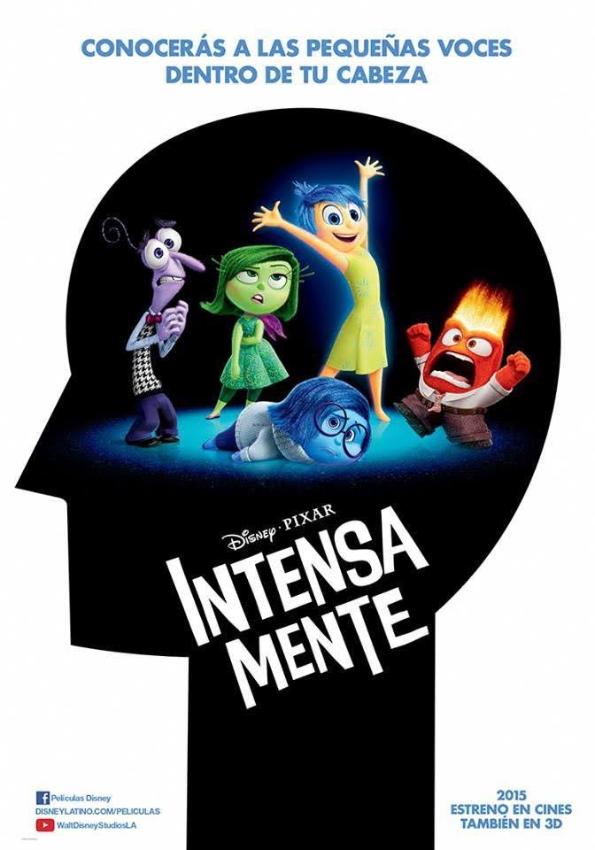IV. ¿Cuál es tu serie de Netflix favorita?
 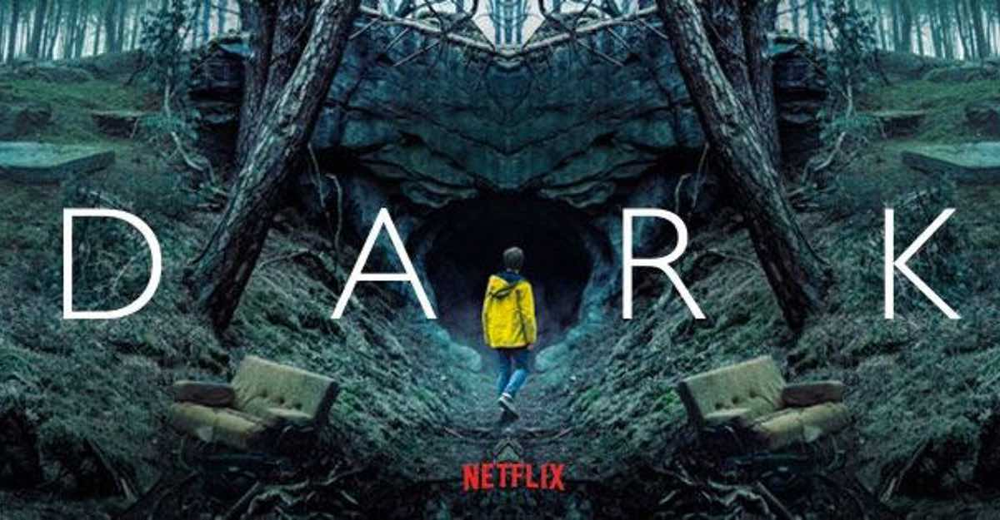
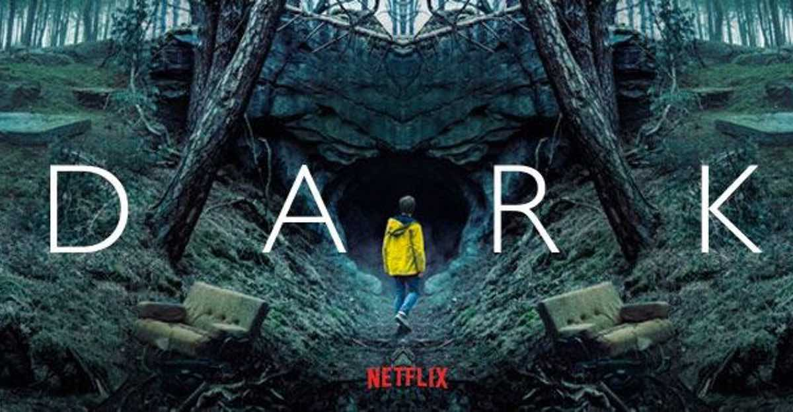
V. ¿Cuál es tu serie de YouTube favorita?
VI. ¿Cuál es tu frase favorita? - “El significado de mi tatuaje, “Necesitas vivir contratiempos para poder seguir adelante””
VII. ¿Cuál es tu lugar favorito?

VIII. ¿Cuál es tu actividad casera favorita?
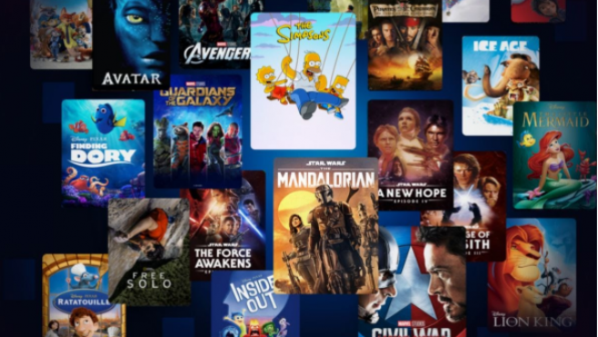 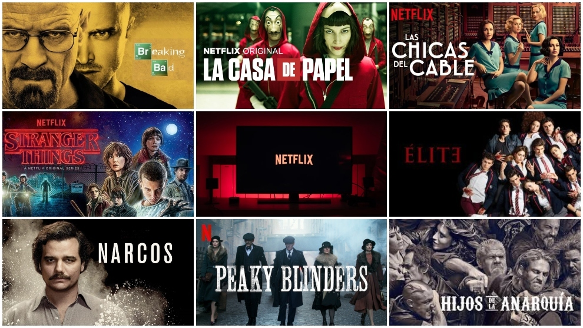IX. ¿Cuál es tu canción favorita?
X. ¿Cuál es tu cantante favorito?

XI. ¿Quién es tu amor platónico?
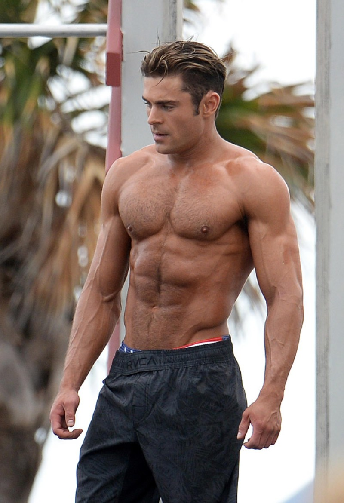 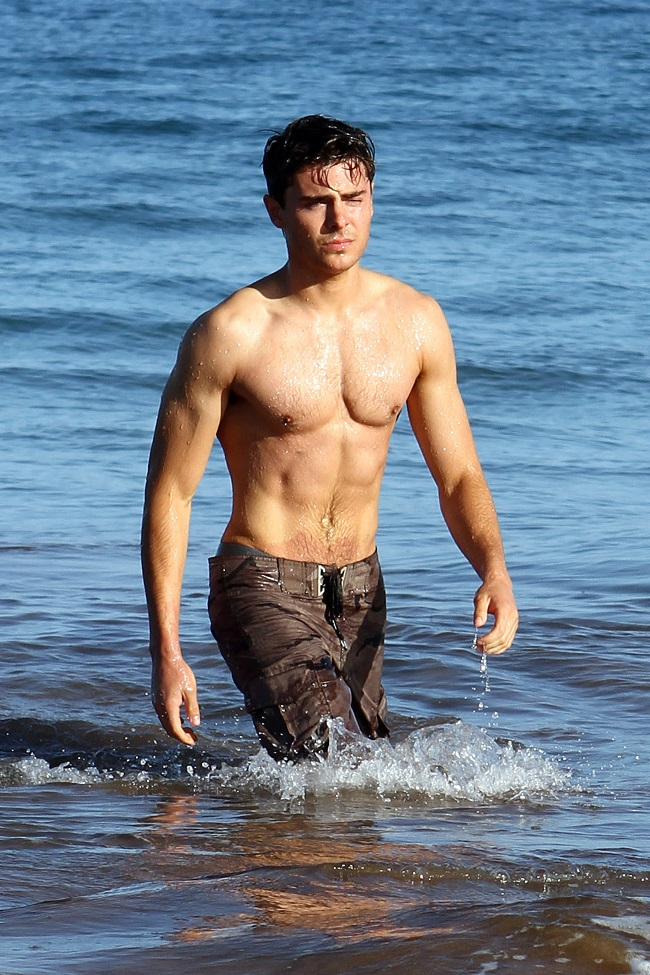 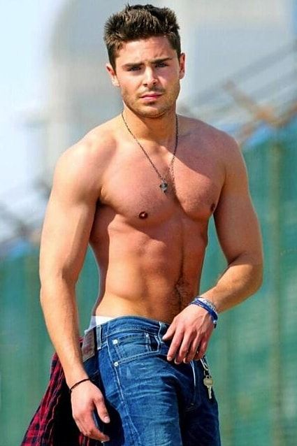 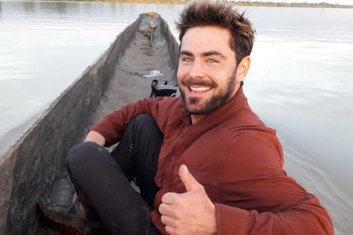 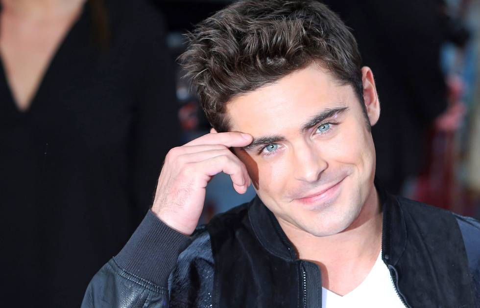XII. ¿Quién es tu youtuber favorito? - “Me gusta Pautips, Calle y Poche pero como que no es seguido a veces y algunos vídeos”
XIII. ¿Quién es tu tiktoker favorito?
XIV. ¿Qué te da miedo? - “Miedo a no ser suficiente”
XV. ¿Cuál es tu lugar soñado?

XVI. ¿Cuál es tu libro favorito?
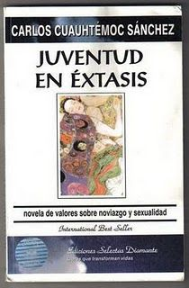XVII. ¿Qué super poder te gustaría tener?

XVIII. ¿Cuál es tu comida favorita?
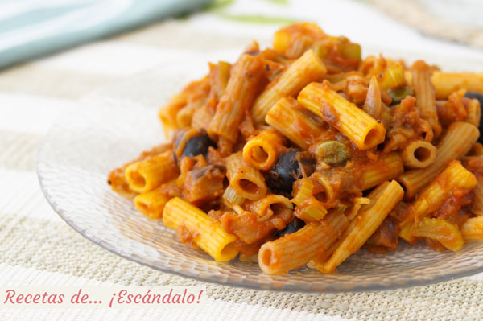XIX. ¿Cuál es tu recuerdo más vergonzoso? - “Estaba con mis hermanos y pasé por el lado del niño que me gustaba, tenia como 12 años, y por ir distraída me caí, el niño y mis hermanos se rieron de mi”
XX. ¿De qué te arrepientes? - “De no decir las cosas a tiempo y tardar tanto en decir las cosas”
XXI. ¿A qué edad tuviste tu primer beso? - “Como a los 10 años”
XXII. ¿Te has enamorado alguna vez? - “Creo que no”
XXIII. ¿Qué fue lo más loco que hiciste en el colegio? - “No sé si loco pero una vez llegué tarde con una amiga y nos metimos por el área de preescolar para que no nos pusieran retardo, nos saltamos una barra y nos pillaron todo eso para saber que queríamos ir a clase, claramente parecía que nos fuéramos a volar del colegio”
XXIV. ¿Quién de tu familia es tu confidente? - “manu, mi sobrina”
XXV. ¿Cuál es tu fruta favorita?
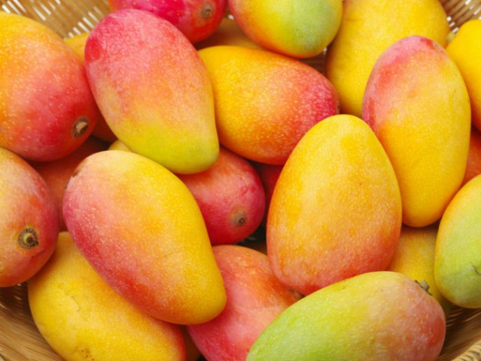XXVI. ¿Qué canción odias?
XXVII. ¿Cuál es el nombre de la primera persona que te gustó?

XXVIII. ¿Qué detestabas de tu ex? - “Que fuera mentiroso”
XXIX. ¿Te hubiese gustado haber nacido del sexo opuesto?
XXX. ¿Cuál sería tu trabajo soñado? - “Trabajar en la creación de políticas públicas en Colombia”
XXXI. ¿Qué es lo que más valoras de nuestra amistad? - “Siento que siempre estamos los unos para los otros”
XXXII. ¿Cuál crees que es el significado de la vida? - “Qué pregunta tan compleja, considero que aún hay muchas cosas que no entiendo y que me cuesta mucho entender y que eso me hace daño, sin embargo considero que es un cúmulo de vivencias, de experiencias pero que realmente no sabemos que podemos esperar”
XXXIII. ¿Qué figura mítica ó persona antigua reconocida te hubiese gustado ser?
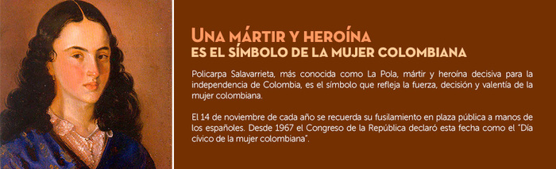XXXIV. ¿Qué talento desearías tener? - “Escribir me gusta mucho y me gustaría hacerlo bien”
XXXV. ¿Cómo te definirías en tres palabras? - “sensible, terca, confiable”
XXXVI. ¿Qué extrañas de tu infancia? - “Sentirme el centro de la familia”
XXXVII. ¿En qué soñabas convertirte de adulto cuando eras niña?
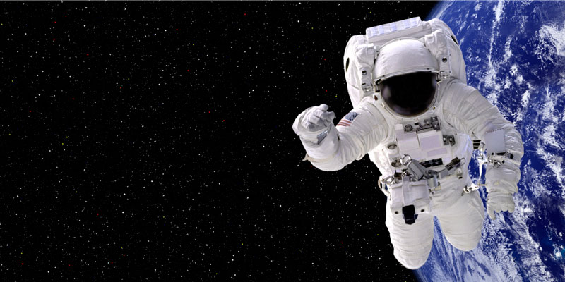
XXXVIII. ¿Cambiarías algo de tu vida? - “A veces si y a veces no, pero quisiera ser un poquito más orgullosa y dura con personas que me han hecho daño”
XXXIX. ¿Cuál es tu mejor virtud y tu mayor defecto? - “Confiable, soy muy insegura”
XL. ¿Tuviste alguna vez miedo de algún monstruo cuando eras niña? - “No jejeje dormí toda mi infancia con mi mamá, creo que eso me hizo fuerte frente a los monstruos jejeje”
XLI. ¿Quién es tu mejor amigo y tu mejor amiga?